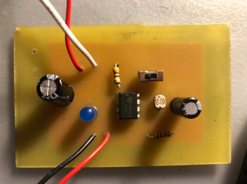
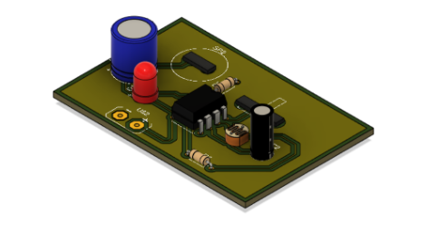
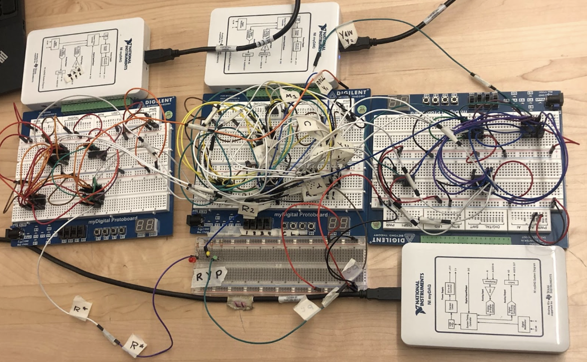
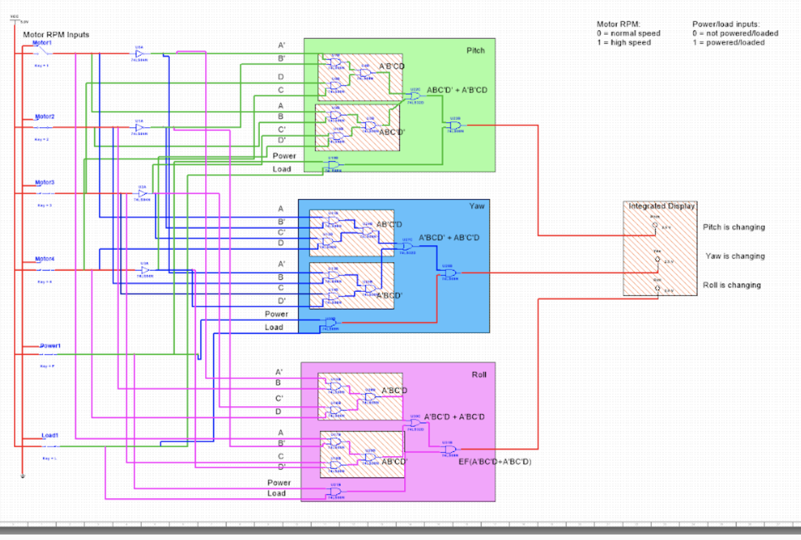
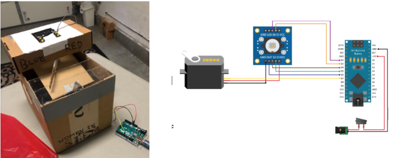
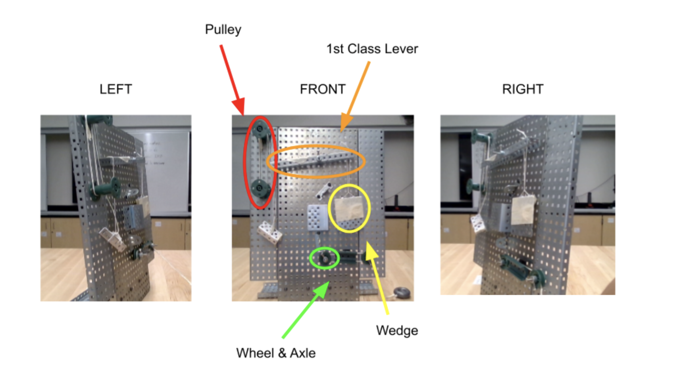
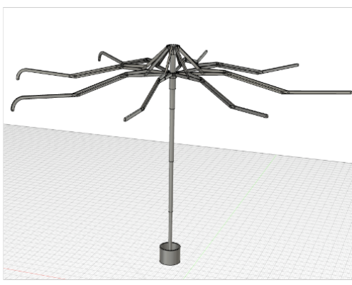
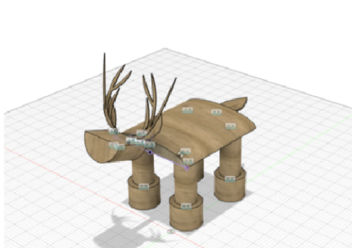

Project 2.2.5 Circuit Design Displays (Digital Electronics)
1/8/23 - 2/14/23
Rubric
The PCB Design Project was an individual project focused on the lengthy process that goes into manufacturing a PCB. The goal of this project was to build a functional PCB, following an efficient and safe process. First, a circuit design had to be selected. I decided to incorporate LDR (light dependent resistors) in my circuit to make a 555 timer light sensor, where an LED would flash more frequently if the light was more intense. It was a simple circuit, with 9 components, to ensure that laying out a PCB would not get too complex. The process consisted of 5 main steps: PCB layout, masking, etching, drilling, and soldering.
Using Fusion 360 and a linked design file, I first planned the layout of my circuit that could be used for the manufacturing steps. Creating a schematic and PCB design were important steps in ensuring the right components were present and connected correctly. Creating a PCB mask was a tedious step because it required dealing with a “rat’s nest” of wires and sorting through them to create a mask that was easy to work with. This process took a long time, since my board had to be routed in a way that avoided wires crossing over and was most efficient. From these steps, I learned that before any physical prototypes are made, it’s always important to have a solid design because it makes future steps much faster. During the manufacturing steps, especially masking and etching, I had to go back to the design step because I had rushed through it before or not done enough work. This definitely made it clear that I had to slow down in a project that involved so much physical work because otherwise it got very messy. I had to mask my board almost a dozen times due to the mask itself being faulty or the print not transferring to the board. This project involved a great deal of troubleshooting and patience, especially since I was working alone. At the drilling steps, I had to be extremely precise, but by that point I had refined my design a lot, so it was much easier. The soldering step, however, was extremely difficult since I rushed through it and omitted an important step during the etching phase, so when I soldered my board and tested for functionality, it did not work unfortunately.
The goal of this project was to carefully follow through a series of steps to create a final product. It was based more on the process than the end design, since manufacturing a circuit from the start is an extremely complex and rigorous process. I learned a lot about managing my own deadlines and working slowly through initial steps of a project to ensure that future steps were easier. Additionally, I picked up several new skills, like using PCB design software, etching, and drilling. This project allowed me to refine all of the skills I had picked up during the year and demonstrate my ability to follow a specific process as an engineer.
Project 2.1.5 AOI Design (Digital Electronics)
11/7/22 - 11/30/22
Rubric
Project 2.1.5 was focused on using AOI, or combinational, circuit logic to solve a multi-part real world problem. Part of the criteria was to have at least three individual circuits that could be integrated together to produce a main output. We were required to have at least 6 inputs and 3 smaller outputs that were integrated. For our problem, we decided to create an Amazon Drone Simulation system that allowed a user to move a drone in 3 dimensions: pitch, yaw, and roll. A change in movement in these dimensions would be determined by the difference in rotations per minute of a quadcopter’s motors and whether the drone had a load and was charged. 4 motor rpms and a load and charge button were the inputs, and based on different combinations of these values, the user would be able to see if pitch, yaw, or roll was changing at a given time. The integrated output was a color coded display that indicated what was changing every time the motor rpm changed.
Since pitch, yaw, and roll could not change simultaneously, we wanted to implement a part of the system that would look at every three bits and display the sequence of pitch yaw and roll at a given time. We constructed a functioning simulation of it, however, when we implemented it on a breadboard, there were too many minor problems, so we decided to stick with our original idea for the sake of functionality and simplicity. Below is our final circuit simulation, color coded for each section.
During the project, I helped mainly with breadboarding and designing the integrated simulation. Since I was the only member who could access the circuit design system outside of class, I tested our ideas and ensured that my members’ components were functional as well. In terms of breadboarding, I helped with color coding and designing my individual portion, pitch. Anwesha and I came up with the integrated idea involving flip flops and I designed a functional multisim for it, although we could not actually implement it. I was also in charge of the labeled diagrams for documentation. As a team, Anwesha, Anisha, and I worked well together. There was constant communication between all of us and we met multiple times outside of class to ensure that our documentation and physical prototype was functional. We also came up with an idea we were all satisfied with and did our share during the project. Our idea was unique because with further development, it could actually be used for a physical drone control practice simulation. It could be applied because it was based on actual flight concepts and it was intended to work for a newer problem.
Entrepreneurship Project - Project Recycle (Principles of Engineering)
5/4/22 - 5/18/22
Rubric
The 2022 Entrepreneurship Project is a major project done by all of the engineering and CS students at DHS. This year, I worked with Anwesha, Prathik, and Yougi to develop a trash can that automatically sorts trash using a variety of sensors, an arduino nano, and a servo arm. Since we could not acquire actual capacitive, inductive, or moisture sensors to detect plastic, we used a color sensor for our prototype to communicate the placement of the sensors and how the overall mechanism would work. I helped with the prototype, documentation, and presentation for this project. For documentation, I assisted Anwesha in writing a solution summary that provided an in depth description of our product. I focused on calculating the mechanical advantage of the simple machines and describing their significance in our solution. Once Prathik gathered data about the prototype, I used his findings to write a detailed analysis of our current iteration of the design. I also noted issues that were found while testing and identified possible causes and solutions that could be implemented if we had more time and resources.
In POE class, I worked with Anwesha to gather materials and build a physical prototype with cardboard and tape. I focused on implementing simple machines to improve the product. This included an inclined plane to send trash down and a “wheel and axle” servo arm. I also helped with planning out our code and making the process efficient in terms of the soft-ware. During the project, we wrestled with the issue of communication. One of our group members did not even answer our messages or view the document until the last day, so the burden was placed on the other members. Moreover, we were unable to set deadlines properly and actually meet them, which led us to cram a lot of work into a few days. Although our prototype worked quite well, it could’ve been better if we had stuck to a solid plan and our gantt chart.
Compound Machine Project (Principles of Engineering)
9/17/2021 - 9/28/2021
Rubric
In this project, I worked with four other students to design a compound machine for the fictional company, "Compound". We had to design a functional system that performed an every day task and included at least 4 different types of simple machines. Through the engineering design process, we planned and built a machine that stapled paper using a pulley, first class lever, wedge, and wheel and axle. In this project, I mainly focused on building and testing our design, but I also contributed calculations of the mechanical advantage and documentation. Our group's machine was quite flimsy, especially at the wedge aspect of our system, and we had limitations on materials and time, so this was a major challenge. We overcame this issue by discussing solutions to our issues outside of building and maximizing our in class work time. My group and I also struggled with making our machine function consistently, but we tackled this problem by constantly prototyping solutions and changes. By repeatedly cycling through the design process and communicating issues to my team to ensure the functionality of our machine, I exhibited my ability to persevere and work diligently in a team.
Entrepreneurship Project (Intro to Engineering Design)
5/3/2021 - 5/17/2021
In this project, my group and I had 3 weeks to develop a solution to a problem of our choice. Through a design matrix and brainstorming, we decided to generate a solution to inconvenient umbrella designs that made environments slippery. I was the Research Lead and Assistant who found evident flaws in current umbrella designs and presented them to my group. Additionally, I assisted my members in CADing the new umbrella in Autodesk and formally presenting it in a detailed video. My group and I faced issues with communication, since planning a project virtually was extremely difficult, and we had other commitments at that time. I took initiative and solved this by distributing the work and creating a schedule for meetings. Moreover, in order to ensure that our product was truly innovative, we contacted an engineering from an industry professional, Mark Rose. His feedback was very helpful and our teamwork and initiative to get outside help made this project more successful.
Lawn Ornament Project (Intro to Engineering Design)
2/11/2021 - 2/22/2021
In this project, my partner and I were asked to design a visually appealing deer lawn ornament that would be easy for consumers to assemble and place in their front yards. There were weight and material criteria that were crucial to follow for our project. It also had to withstand a 40 pound tipping force,which would be calculated using measurements from out Autodesk (CAD) prototype. My teammate and I decided to stick with a simple yet sturdy deer design that used flat wooden pieces that could be inserted through fitted slits.
After extensive research on local deer measurements and recyclable materials, we applied our CAD knowledge to make a proportional deer. However, our deer was too flimsy and small to withstand a 40 lb tipping force, so we repeated the design process multiple times to resize it and utilize new materials. I helped draw initial designs, create multiple versions of the lawn ornament prototype, and document in this project. I came up with quick fixes that were realistic and fit the criteria, which exhibited my ability to problem solve and apply my knowledge to realistic issues. We presented our project in a professional sales pitch that gave step by step instructions on how to assemble the lawn ornament and why people should purchase it.